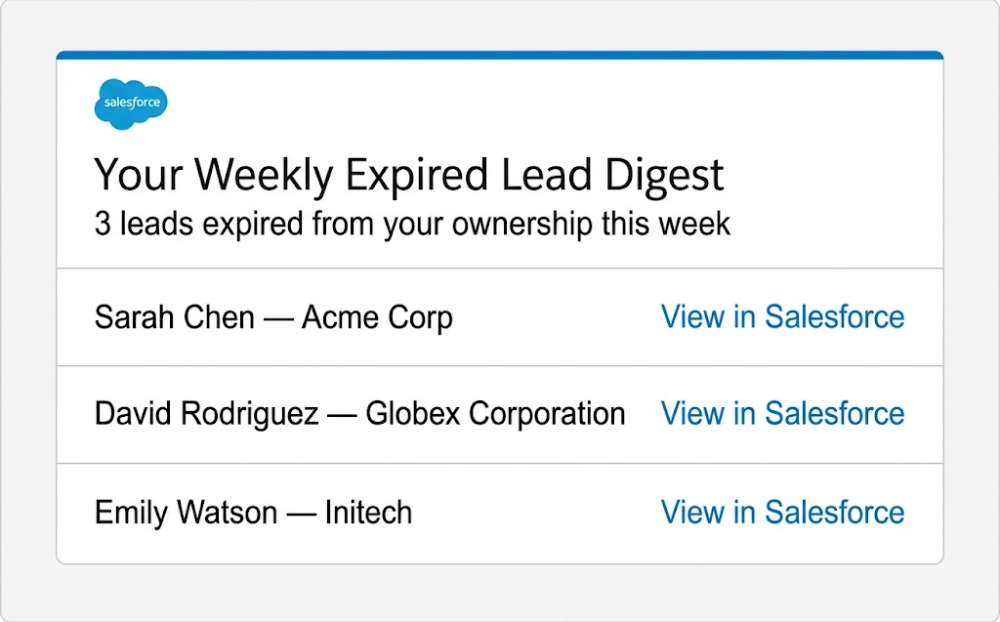

When leads expired out of rep ownership after the 14-day window, they disappeared silently - no notification, no log, and no way to re-engage. This project built a native Salesforce system that captures every expiration event and delivers a personalized weekly digest to each rep every Monday.
